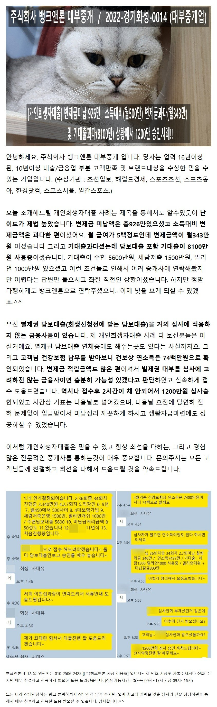
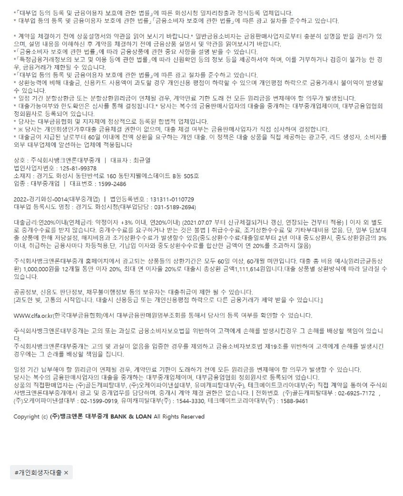

[개인회생자대출] 변제금미납 926만, 소득대비(월500만) 변제금과다(월343만) 및 기대출과다(8100만) 상황에서 1200만 승인사례!!

상담신청 -> https://cafe.naver.com/cityman88/29497

https://cafe.naver.com/cityman88/309660
상담신청 -> https://cafe.naver.com/cityman88/29497

https://cafe.naver.com/cityman88/309660